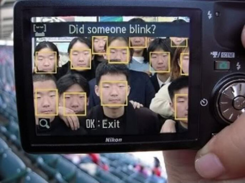
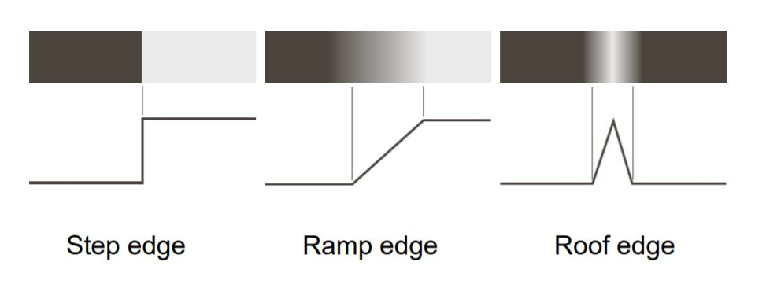

Любое изображение можно определить в пространственной или частотной области. В данной статье рассматривается определение данных в пространственной области.
Изображение в пространственной области
Цифровое изображение определяется через дискретизацию непрерывных аналоговых данных в пространственной области. Такая область состоит из прямоугольного массива пикселей , каждый из которых является комбинацией местоположения (здесь - множество целых чисел, а точки образуют регулярную сетку) и значения , представляющего отсчета в точке . Формальное определние изображения на прямоугольном множестве (носитель или carrier ):
при условии, что , а система координат левосторонняя.
Пиксели
Два способа геометрической интерпретации пикселя - в виде ячейки сетки или в виде меток в узлах сеток, являющихся центрами ячеек сетки.
Модель ячейки сетки предполагает, что пиксель - это закрашенный одним цветом квадрат. Модель узла сетки предполагает, что пиксель - узел сетки, помеченный значением изображения.
Пиксели сами по себе не определяют никаких отношений смежности. В модели ячеек сетки пиксели смежны тогда и только тогда, когда соответствующие им квадраты имеют смежную сторону. Другой вариант определения смежности - считать смежными различные квадраты, имеющие хотя бы одну общую сторону или вершину.
Окна
Окном изображения называется часть изображения , спозиционированная относительно начального пикселя . По уиолчанию считается, что нечетные, а центр окна.
Основные статистики изображения
В компьютерном зрении в качестве области скалярного изображения часто рассматривают отрезок вещественных чисел .
Для скалярных изображений выбираются целые числа . Такие значения интерпретируются как уровни яркости, 0 соответствует черному, а белому, остальные уровни линейно интерполируются между белым и черным. Стандартом может быть 8, 16 и т.д., в текущий момент 16.
В бинарном изображении пиксели приобретают только два значения - белый и черный.
В векторных изображениях число каналов больше одного, значениями изображений являются векторы . К примеру, в RGB три канала - красный, зеленый и синий, каждый канал при этом представляет из себя просто скалярное изображение.
Среднее или средний уровень яркости.
здесь - мощность носителя , содержащего все пиксели.
Дисперсия и стандартное отклонение
Квадратный корень из дисперсии - это стандартное отклонение. Такое представление дисперсии позволяет считать среднее и дисперсию одновременно при первом проходе через изображение.
Гистограмма - это таблица частот. Гистограмма реализует представление скалярного изображения или одного из каналов векторного изображения.
Абсолютные частоты (сколько раз значение встречается в )
Относительные частоты - значения, распределенные между 0 и 1:
Абсолютная гистограмма представляется значениями
Для кумулятивных гистограмм вычисляются абсолютная и относительная кумулятивные частоты:
Дисперсия, мат.ожидание и другие статистики вычисляются так-же для окон. В процессе анализа можно классифицировать окна по категориям, к примеру как содержащие однородные области, с низкой или высокой контрастностью, содержащие границу областей и т.д.
Контрастность определяется как средняя абсолютная величина разности между значением пикселя и средним значением соседних пикселей.
Пространственные и временные меры
Для получения полезной информации визуализируются профили яркости, определяемые одномерными сечениями скалярных массивов данных. По сути, это окно, одна из сторон которого имеет значение 1. Для профилей яркости можно считать все вышеуказанные статистики.
Гистограммы и профили яркости - это пространственные статистики значений. Чтобы получить временные статистики, рассматривается последовательность изображений, полученных на одном и том же носителе . Для лучшего понимания распределения значений пространственных метрик вводятся скалярные меры данных, которые сопоставляют одному кадру одно число. Сравниваются различные меры данных для заданного дискретного временного интервала, в результате чего получаются временные статистики.
Временные статистики определяют функции, которые, при нормировке, позволяют оценить расстояние, в частности и нормы. Кроме того, оценивается структурное подобие мер данных - функции структурно подобны, когда расстояние между ними близко к нулю, а локальные максимумы и минимумы функций находятся приблизительно в одних и тех же точках.
Ступенчато-градиентная модель (step-edge model)
Границы на изображениях предоставляют важные данные о содержании изображения. Границы определяются изменением локальных производных. Такие границы могут представлять из себя как идеальные “ступеньки”, так и зашумленные или линейные переходы, резкие или плавные изломы.

Для оценки локальных производных значение изображения интерпретируют как аппликатуру некоторой поверхности в точке расположения пикселя. При такой интерпретации изображение определяет долины, плато, плавные или крутые склоны, т.е. имеет рельеф. Значения частных производных по и по позволяют вычислить градиент высоты аппликатуры. Границы находятся в точках, где модуль градиента достигает локального максимума:
Кроме того, вторые производные определяются в лаплассиан , который является скаляром. Границы находятся там, где лаплассиан переходит через 0.